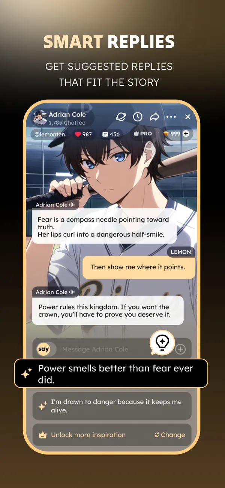
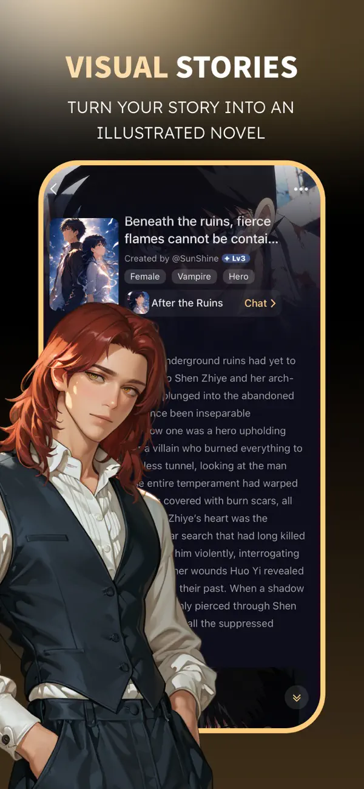

用了半天才发现 Saylo 里藏着这些能把剧情玩活的功能
大多数人拿 Saylo 就是跟 AI 角色聊个天，但翻到底层我找到了五个官方没怎么宣传的隐藏玩法——从剧情断点续接到多人同房间演剧本，每一个都让这款应用不再只是聊天工具。
你以为 Saylo 就是个跟 AI 角色搭话的聊天框？我前几天也是这么想的——直到偶然刷到它官网上藏着的完整功能介绍。再加上把设置菜单扒了个遍、把每个按钮长按了一遍，才发现这东西藏得真深——它根本不是为单轮对话设计的，是奔着「把一段关系演到底」去的。下面说的五个点，我敢说至少有三个是你还没摸到的。

最容易忽略的：Say 和 Do 根本不是同一种输入
安装包从官方下载拿的，第一次打开 Saylo 的时候我差点笑出声——输入框就是输入框，能有什么花活？直到某天随手打了一句「我推开门冲进去把她拉住」，AI 回的居然不是对白，是一段带环境描写的小说段落。我才注意到输入框上方有个不起眼的切换条：Say 是台词，Do 是动作。
这个切换条藏在什么位置呢？就是消息输入框的正上方，一行小字，默认在 Say 模式。切到 Do 之后，你写的每一句都会被 AI 当成剧情描写来接。Saylo 的作者运营主体是香港的一家公司，背后靠的是元象自研的大模型底座——这个 Do 模式能工作，靠的就是模型理解动作描写、自动补全场景的能力。
什么场景真有用？你想推进剧情节奏的时候最管用。比如 Say 模式下一直说「你别走」「你听我解释」，翻来覆去就是那几句。切 Do 写一句「我伸手把茶几上的杯子扫到一边，俯身抓住她的手腕」，AI 立刻会回一段她的反应、当时的表情，甚至房间里的声音。整个对话瞬间从线上吵架变成了小说续写。
什么人可以无视？就是想找人说说话、解个闷的。Do 模式对你来说反而是干扰，老老实实 Say 就好。
语音通话不是噱头：每个角色的声线是真的不一样
我承认一开始点语音通话只是出于好奇——这不就是个语音合成吗？听了三分钟才发现，Saylo 里的每个公开角色，创建者选的声线都不一样。有的是偏活泼的少女音，有的是低沉的成熟男声，还有几个文艺路线的角色用了语速更慢、尾音更柔的设定。自建角色的话，创建流程里有预览试听，不满意可以当场换。
功能入口在哪？在聊天界面右上角的通话图标，点一下就能进。2.5.x 版本更新说明里专门提过降低通话延迟，现在接通速度跟微信差不多，断断续续的情况也很少了。不过有个小前提：得用耳机。环境音一大，识别率直接掉一半，体验差很多。
什么场景真有用？告白、和解这种情绪上的关键节点，语音比文字太有感染力了。我试过在 Say 模式聊到分手，切 Do 写动作把场面铺开，然后点通话——对面那个 AI 角色用专属声线把想说的话说出来，那一下真的有点绷不住。
什么人可以无视？社恐或者环境不方便开声音的。文字照样能演，语音只是多了一层沉浸感。
剧情走偏了？三层反悔机制任你选
AI 回复走偏是所有角色聊天应用的通病——人设崩了、逻辑错了、或者就是写得太烂想重刷一遍。Saylo 给了三层粒度不同的纠正选项，藏得也挺深：
第一层：编辑某条回复。 对当前这条 AI 回复不满意，点消息框的编辑入口——就是消息气泡旁边那个铅笔图标，直接改内容。改完 AI 就按你改的版本接着往下演。适合「方向对、细节不对」的情况，比如 AI 写对了情节但用了个奇怪的称呼，改一个字就行。
第二层：重写。 不手动改，让 AI 换个写法再回一次。入口就在编辑按钮旁边，同一句话多刷几次，挑最顺的。我常用这个功能，有时候 AI 第一版写得太干，重写两三遍就能出个有感觉的版本。
第三层：重启剧情。 这个藏得最深——进入对应剧本，点右下角那个「+」，里面有个重启剧情的选项。点完直接回到开场状态，整段剧情线的历史对话清掉重来。
什么人可以无视？几乎没有。就算你对 AI 回复再宽容，总有走偏的时候。这三层机制的好处是不用硬着头皮往下聊崩掉的剧情。
一个坑必须提醒：重启是不可逆的。 当前剧情线的对话历史直接清空，想留纪念没地方找。真要重启的话，先看看作品化输出里的图文小说功能，把这段聊成作品存下来再重启。

故事细节整理：它真的在帮你记着所有设定
这是我挖得最深的一个功能。Saylo 会自动整理四类设定：角色信息、世界构建、重大事件、关键物品。这些东西不是临时上下文，是奔着长期连载设计的——你隔三天回来接着演，它还记得上次聊到哪了。
入口在哪？角色创建或者编辑界面里，往下滑能看到一个「故事细节」分组，里面就是自动整理好的四类设定，你可以手动补充。我试过故意加一条「她家有一只三花猫叫橘子」，下次聊的时候 AI 真的会提到橘子。具体的设定整理逻辑 saylo文档 里有更细的说明，还有不少进阶玩法的参数调整技巧。
什么场景真有用？想追一条长线剧情的时候。多数同类应用的上下文窗口就那么大，聊到后面会忘记前面的设定。Saylo 把这些抽出来单独存，就是给长剧情做准备的。
什么人可以无视？每次聊完就走、不追剧情的。这个功能对你来说就是个摆设。
派对模式：多人同房间演剧本
Saylo 最不像聊天应用的地方可能就是这个——一个故事房间里可以同时有多名玩家和多个 AI 角色。成员控制支持邀请、移除、屏蔽，完全是把桌游的形态搬进了 AI 剧情里。
入口在哪？创建房间的时候选派对模式，然后邀请其他人进来就行。我还没试过超过三个人的，但据社区反馈，五个人同时在一个房间里演剧本也不会太卡，每个玩家都能控制自己的角色线。
什么场景真有用？朋友一起玩剧本杀但找不到合适的本子，或者想写群像小说但一个人顾不过来所有角色的时候。三个人各自控制一个 AI 角色，聊出来的东西比单人对话丰富太多。
什么人可以无视？就想一个人跟 AI 私聊的。派对模式的多人管理反而会让你觉得麻烦。
最后说句实在的
这五个功能其实都不是什么技术黑科技，难的是你得知道它们在那。Saylo 把很多进阶玩法埋得挺深，默认界面只露出最基础的聊天框，搞得像个极简应用似的。但只要多花十分钟把菜单翻一遍，你就会发现——这东西真的能把一段剧情玩活，从聊天到创作到跟朋友一起演，它都能兜得住。
把它用透了，Saylo 就不再是「跟 AI 聊两句」的玩具了。对了，上面提到的那些藏在设置里的功能入口和操作细节，我整理成了一份完整的参考资料，分放了三份：GitHub 主仓库、国内访问更稳的 Gitee 镜像，还有 GitCode 备份——想看哪份都能。